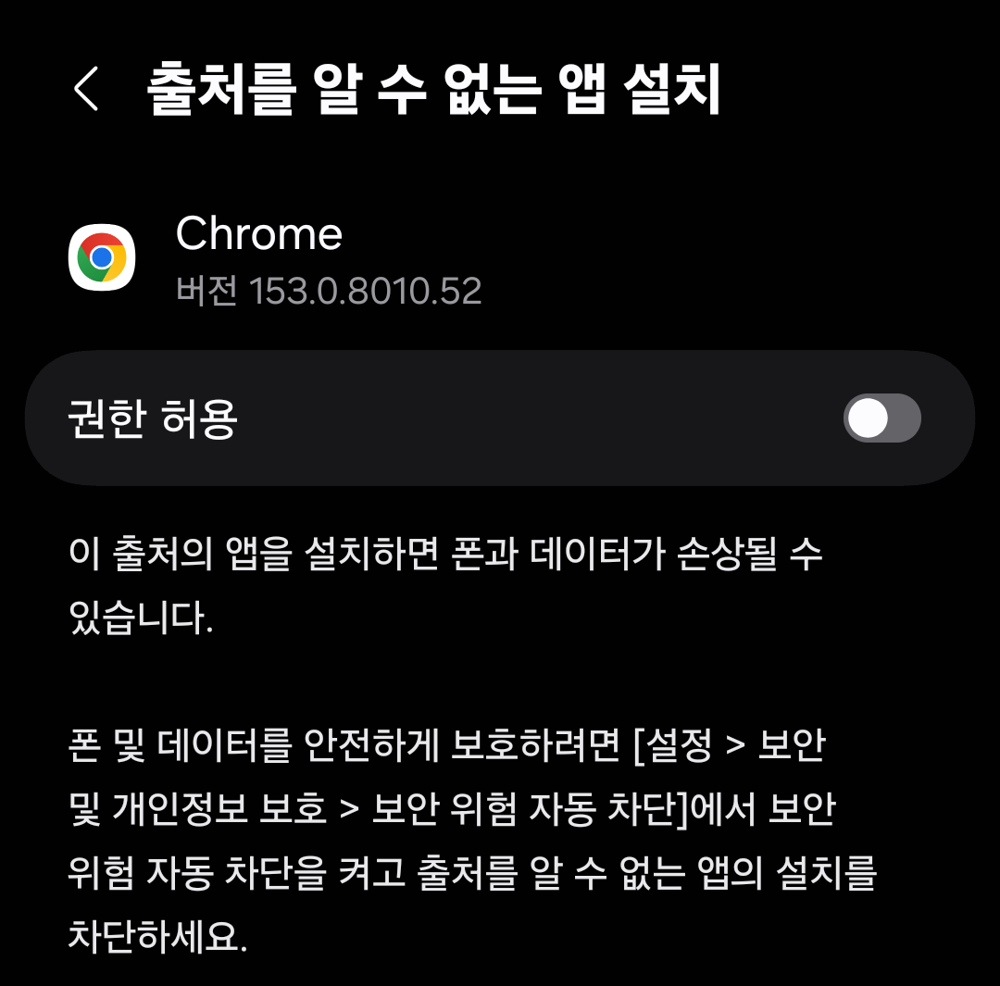
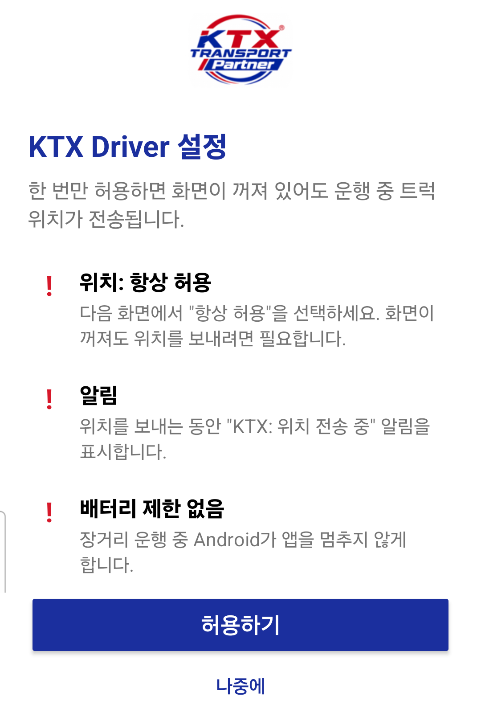
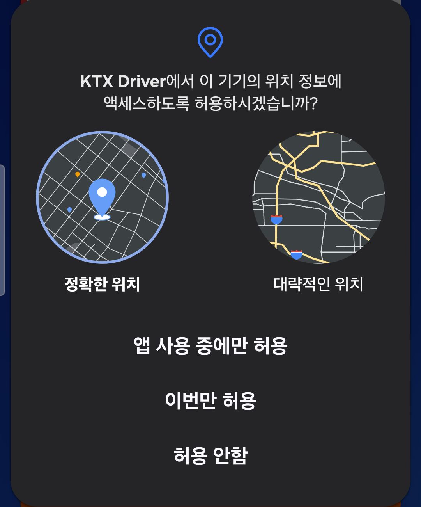
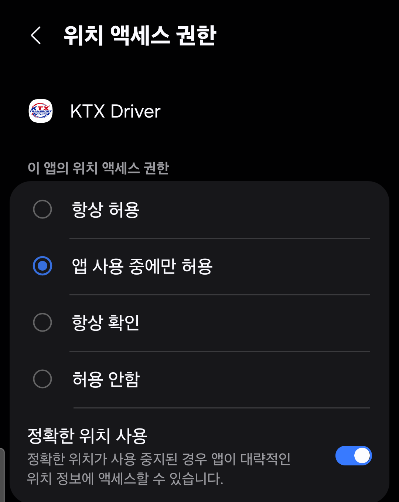
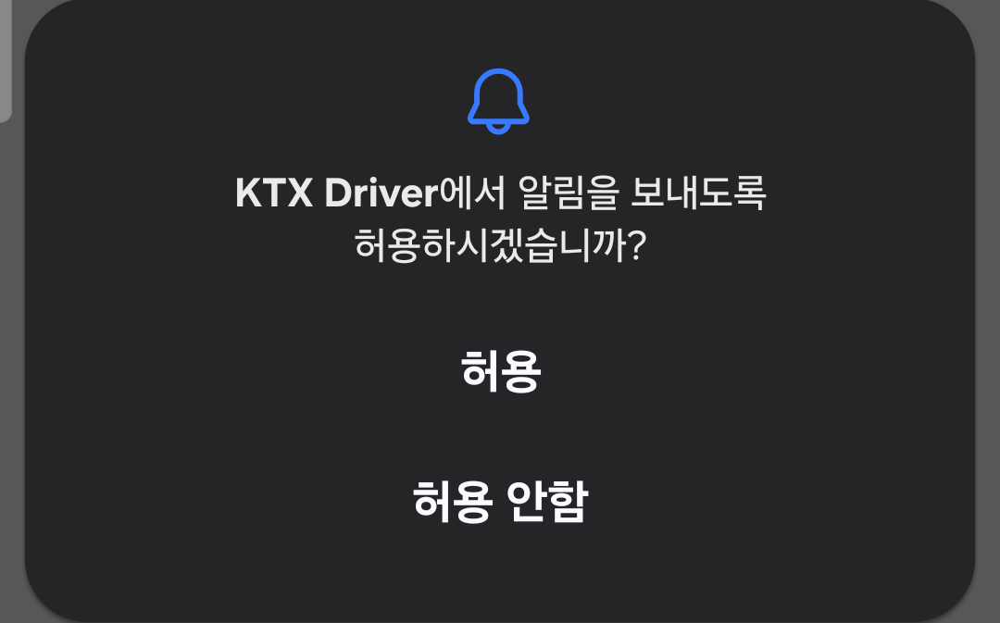
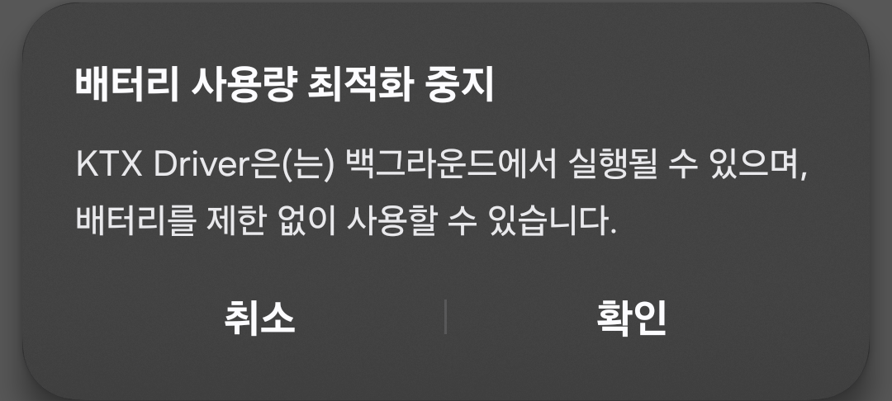
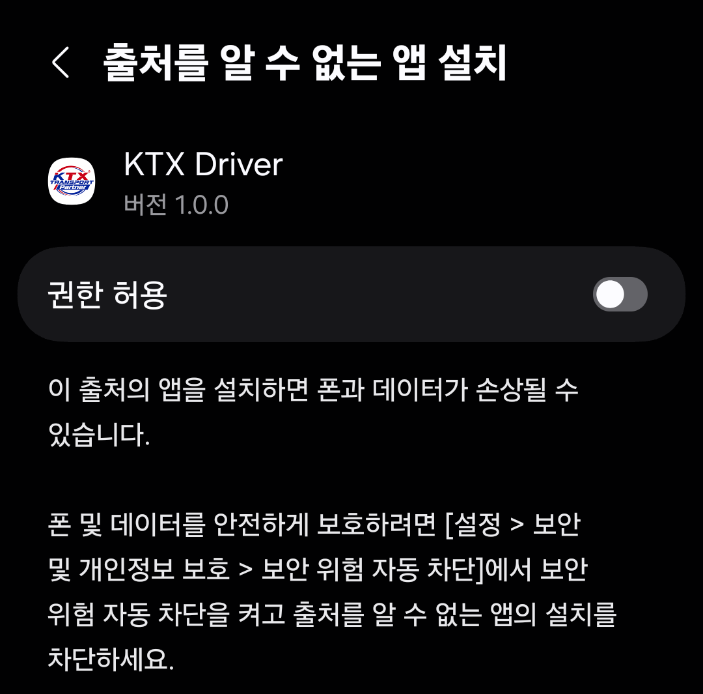
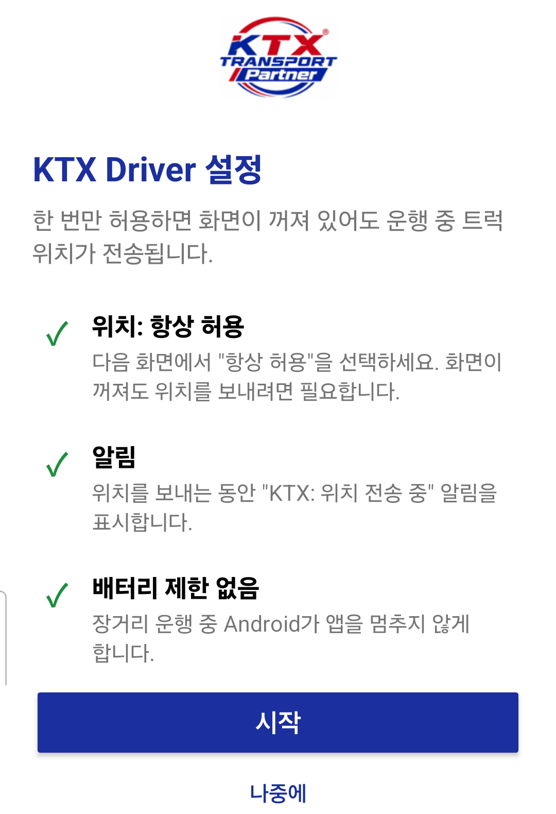
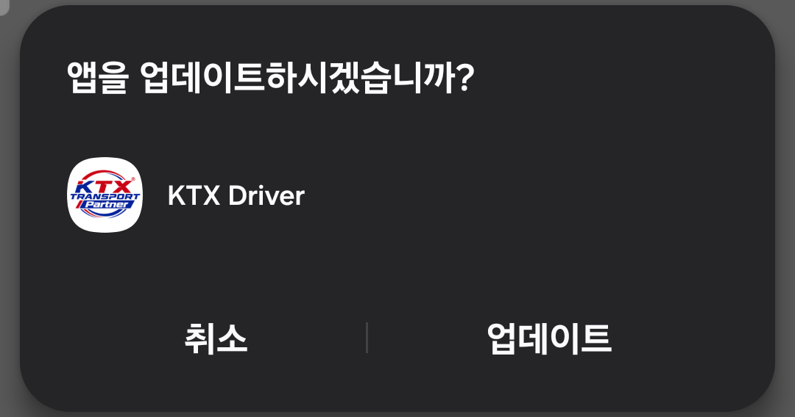

폰에서 Chrome(인터넷)을 열고, 표지에 적힌 앱 내려받기 주소를 주소창에 입력합니다.
회사에서 문자나 카카오톡으로 링크를 받았다면 그 링크를 누르면 됩니다.
Android 폰용 · 약 5분이면 끝납니다
폰에서 Chrome(인터넷)을 열고, 표지에 적힌 앱 내려받기 주소를 주소창에 입력합니다.
회사에서 문자나 카카오톡으로 링크를 받았다면 그 링크를 누르면 됩니다.
"유해한 파일일 수도 있음" 창이 나오면 무시하고 다운로드를 누릅니다.
다운로드가 끝나면 화면 아래의 열기를 누릅니다.
놓쳤다면 화면 맨 위를 아래로 내려 알림창에서 ktx-driver-….apk를 누릅니다.
"보안을 위해 … 알 수 없는 앱을 설치할 수 없도록 설정되어 있습니다" 창이 나오면 설정을 누릅니다.
(이 창이 안 나오면 3번으로 넘어가세요.)
Chrome 화면에서 권한 허용 스위치를 켭니다.
그다음 폰의 뒤로 가기를 누릅니다.

"이 앱을 설치하시겠습니까?"가 나오면 설치를 누릅니다.
설치가 끝나면 열기를 누릅니다.
다음부터는 홈 화면의 KTX Driver 아이콘을 누르면 됩니다.
앱을 처음 열면 "KTX Driver 설정" 화면이 나옵니다. 운행 중 위치가 끊기지 않게 하는 설정이니 모두 허용해 주세요.
허용하기를 누릅니다.
이어서 나오는 창들을 아래 순서대로 누르면 됩니다.

위치 창에서 앱 사용 중에만 허용을 누릅니다.

다음 화면에서 항상 허용을 고른 뒤 뒤로 가기를 누릅니다.

알림 창에서 허용을 누릅니다.
위치를 보내는 동안 "KTX: 위치 전송 중" 알림이 보이게 됩니다.

"배터리 사용량 최적화 중지" 창에서 확인을 누릅니다.

KTX Driver의 "출처를 알 수 없는 앱 설치" 화면에서 권한 허용 스위치를 켜고 뒤로 가기를 누릅니다.
나중에 새 버전이 나오면 앱 안에서 바로 업데이트하기 위한 설정입니다.

모든 항목에 초록색 ✓가 붙으면 시작을 누릅니다.

휴대폰 번호를 입력합니다.
문자 수신 동의 칸에 체크하고 Send를 누릅니다.

잠시 뒤 KTX Transport에서 문자가 옵니다. 문자 안의 링크를 누릅니다.
KTX Driver 앱이 열리고 로그인됩니다. 화면에 Continue 버튼이 보이면 누르세요.
앱을 열고 PICK UP을 눌러 화물을 스캔합니다(또는 오더 번호 입력).
픽업을 마치면 위치 전송이 자동으로 시작되고, 화면 맨 위에 "KTX: 위치 전송 중" 알림이 생깁니다.
운행 중에는 따로 할 일이 없습니다. 화면을 꺼도 되고, 지도나 전화 같은 다른 앱을 써도 됩니다.
마지막 화물의 배송을 마치면 위치 전송이 자동으로 멈추고 알림이 사라집니다.
새 버전이 나오면 앱을 열 때 알려 줍니다. Play 스토어에 갈 필요가 없습니다.
"새 버전" 창에서 업데이트를 누릅니다.
바쁘면 "나중에"를 눌러도 됩니다. 다음에 다시 알려 줍니다.
잠시 내려받은 뒤 "앱을 업데이트하시겠습니까?"가 나오면 업데이트를 누릅니다.

| "연결할 수 없습니다" 화면이 나와요 | 인터넷 연결을 확인하고 다시 시도를 누르세요. Wi-Fi에서 안 되면 Wi-Fi를 끄고 모바일 데이터로 해 보세요. |
|---|---|
| 문자 링크를 누르면 Chrome에서 열려요 | 설정 → 애플리케이션 → KTX Driver → 기본으로 열기 → 지원되는 링크 열기를 켜고, 링크 항목을 모두 체크합니다. 그다음 문자 링크를 다시 누르세요. |
| 픽업했는데 "KTX: 위치 전송 중" 알림이 없어요 | 설정 → 애플리케이션 → KTX Driver → 권한에서 위치: 항상 허용, 알림: 허용인지 확인하세요. 그다음 앱을 한 번 열면 다시 시작됩니다. |
| 운행 중 위치가 가끔 끊겨요 | 설정 → 애플리케이션 → KTX Driver → 배터리에서 제한 없음을 고르세요. 삼성 폰은 설정 → 배터리 → 백그라운드 사용 제한에서 KTX Driver가 절전 목록에 없는지 확인하세요. |
| "앱이 설치되지 않았습니다"가 나와요 | 폰에 저장 공간이 있는지 확인하세요. 예전에 받은 KTX Driver가 있다면 삭제한 뒤 다시 설치하세요(다시 로그인해야 합니다). |
| 내 폰의 Android 버전을 모르겠어요 | 설정 → 휴대전화 정보 → 소프트웨어 정보 → Android 버전. 8.0보다 낮으면 설치할 수 없습니다. |
문의처: